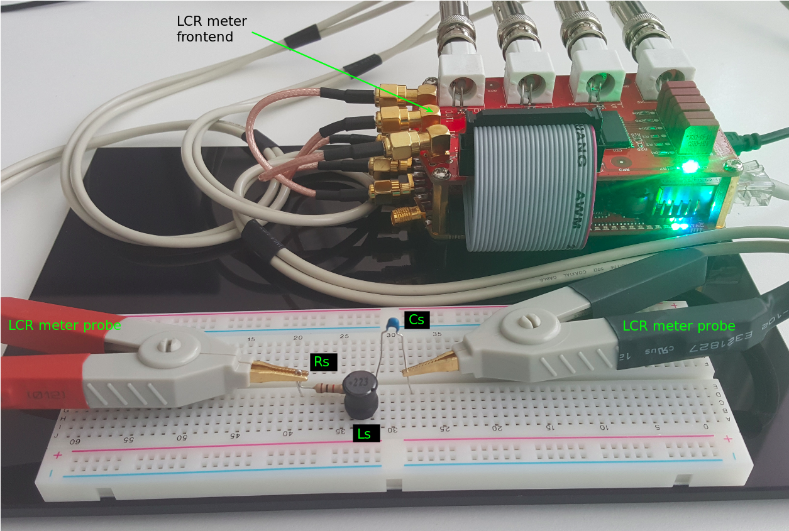
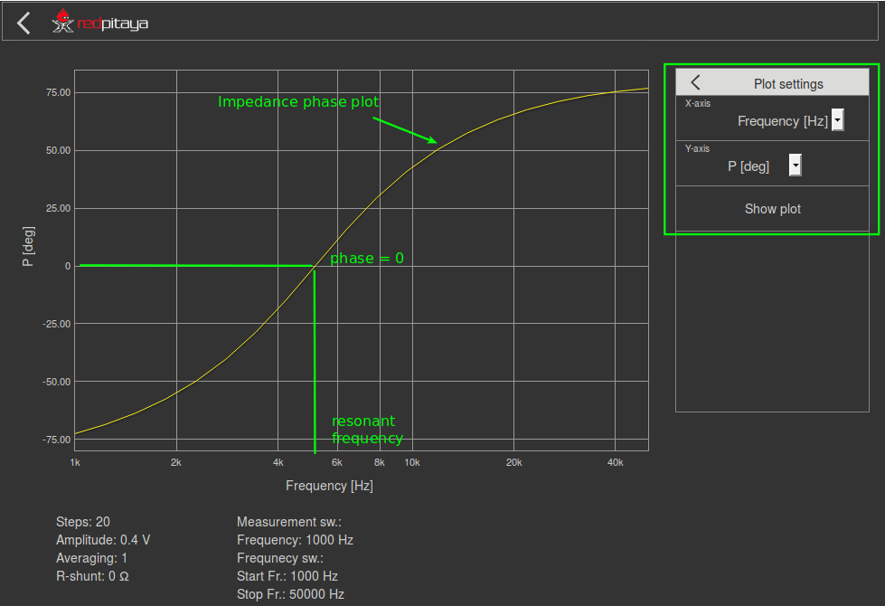

11. Impedanzmessung - Frequenzeffekte¶
11.1. Zielsetzung¶
Das Ziel dieser Aktivität ist:
- Messen Sie die Komponentenimpedanz und die Schaltungsimpedanz mit Hilfe der Impedanzanalysator-Applikation.
- Untersuchen Sie die Größen- und Phasenänderungen mit der Frequenzänderung für eine RLC-Schaltung.
11.2. Anmerkungen¶
In diesen Tutorials verwenden wir die Terminologie aus dem Benutzerhandbuch, wenn es um die Verbindungen zur Red Pitaya STEMlab Board Hardware geht. Die Anwendung des Impedanz analysators dient zur Messung der RLC-Schaltungsimpedanz \(Z(f)\). Neben der Impedanzanalysator-Anwendung zur Impedanzmessung haben wir ein LCR Meter Frontend eingesetzt. Obwohl das Frontend für LCR-Meter bei der Verwendung der LCR-Meteranwendung vorgesehen ist, kann es auch für die Anwendung des Impedanzanalysators verwendet werden. Die Anwendung Impedanzanalysator ermöglicht Messungen der Impedanz, Phase und anderer Parameter des ausgewählten Prüflings (Device Under Test). Messungen können im Frequenzsweep-Modus mit 1Hz Frequenzauflösung oder im Messsweep-Modus mit der gewünschten Anzahl von Messungen bei konstanter Frequenz durchgeführt werden. Der wählbare Frequenzbereich liegt zwischen 1 Hz und 60 MHz, obwohl der empfohlene Frequenzbereich bis zu 1 MHz beträgt. Der Impedanzbereich liegt zwischen 0.1 Ohm und 10 MOhm. Wenn Sie die Impedanzanalysator-Anwendung mit dem LCR-Erweiterungsmodul verwenden, fügen Sie 0 in das Feld Shuntwiderstand ein.
11.3. Hintergrund¶
Die Impedanz ist ein Widerstand des Wechselstroms. Es ist die totale Widerwirkung, die eine Schaltung dem Stromfluss bei einer bestimmten Frequenz bietet. Impedanz \(Z\) wird als eine Kombination aus Widerstand \(R\) und Reaktanz \(X\) ausgedrückt und wird in \(\Omega\) gemessen. Es kann als eine komplexe Größe ausgedrückt werden:
Bei einem idealen Widerstand ist die Impedanz gleich dem Gleichstromwiderstand \(Z = R_ {DC}\). Bei einem Kondensator ist die Impedanz (oder genauer gesagt die Reaktanz) \(X_C\) der imaginäre und negativ -reaktive Teil der Impedanz. Die Reaktanz des Kondensators hängt von der Frequenz ab und ist gegeben als:
Bei einer Induktivität ist die Impedanz (oder genauer gesagt die Reaktanz) \(X_L\) der imaginäre und positiv -reaktive Teil der Impedanz. Die Reaktanz der Induktivität hängt auch von der Frequenz ab und ist gegeben als:
Die Impedanz einer RLC-Reihenschaltung ist die Summe der Impedanzen der jeweiligen Komponenten.
oder
Dies kann auch mit Hilfe eines komplexen Zeigers, mit der Größe \(|Z|\) und phase \(P\) dargestellt werden, wobei \(Z=|Z|e^{jP}\)

Abb. 11.1 RLC-Reihenschaltung.
11.4. Materialien¶
- Red Pitaya STEMlab 125-14 oder STEMlab 125-10
- Widerstand Rs: 1 kΩ
- Kondensator Cs: 0,047 μF
- Induktor Ls: 22 mH
11.5. Verfahren¶
Mit LCR-Meter-Anwendung können wir Induktivität, Widerstand und Kapazität unserer Elemente in der Schaltung bei ausgewählter Frequenz messen. LCR-Meter kann Ihnen helfen, jede Komponente einzeln zu messen, um ihren Wert zu extrahieren, wenn sie auf der Verpackung nicht sichtbar / lesbar ist:
- Starten Sie das LCR-Messgerät
- Schließen Sie die zu messenede Komponente an die LCR-Messsonden an
- Wählen Sie in der LCR-Meter-Anwendung Messmodus/Parameter
- Stellen Sie die Messfrequenz auf 1 kHz ein
- Wiederholen Sie die obigen Schritte für Rs, Ls und Cs

Abb. 11.2 LCR-Meter-Anwendung
Bemerkung
Tatsächliche (gemessene) Werte der Komponenten Rs, Cs, Ls sind anders als markiert (Farbcode für Widerstand und gedruckte Werte an Induktor und Kondensator). Der Unterschied liegt an den Toleranzen der Komponentenwerte
11.6. Messreihe RLC-Schaltung Impedanz¶
Bauen Sie die Schaltung wie in Abb. 11.1 und Abb. 11.2 auf Ihrem lötfreien Steckbrett mit den Komponentenwerten Rs = 1 KΩ, Cs = 0,047 μF, Ls = 22 mH auf.
Abb. 11.3 STEMlab mit LCR-Meter-Frontend und Serien-RLC-Schaltung
Starten Sie die Anwendung Impedanzanalysator.
Bemerkung
Der Impedanzanalysator ist eine Gemeinschaftsanwendung und muss vom Application Marketplace (Basar) heruntergeladen werden. Klicken Sie auf Application-Marketplace-Icon und wählen Sie Install for Impedance analyzer.
- Starten Sie den Impedanzanalysator und:
unter Menü Messeinstellungen Anzahl der Schritte einstellen: 20
unter Frequenz-Sweep legen Sie die Startfrequenz auf 1 kHz und die Endfrequenz auf 50 kHz fest
Wählen Sie Messung starten

Abb. 11.4 Graph der Impedanz der RLC-Schaltungsimpedanz, die mit der Impedanzanalysatoranwendung aufgenommen wurde
Ploten gemessener Phase - unter Plot settings Menu für Y-Achse P [deg] wählen
Abb. 11.5 Diagramm der Impedanz der RLC-Schaltung mit der Anwendung des Impedanzanalysators
Bemerkung
Die Frequenz, bei der dies auftritt (Phase = 0) wird als Resonanzfrequenz bezeichnet. Bei Resonanzfrequenz ist die Gesamtreaktanz Null und die Schaltung ist rein ohmscher Natur.
Also
(11.8)¶\[Z = R + j(X_L - X_C)\]Wenn
(11.9)¶\[X_L - X_C = 0\]dann
(11.10)¶\[Z = R\]Die Resonanzfrequenz kann mathematisch unter Verwendung der folgenden Gleichung abgeleitet werden:
(11.11)¶\[f_0 = \frac{1}{2 \pi \sqrt {LC}}\]
11.7. Fragen¶
- Berechne die Resonanzfrequenz \(f_{o}\) für die Serie RLC unter Verwendung von Gl. Gl. 11.11 und vergleiche sie mit dem gemessenen Wert. Wie groß ist der prozentuale Fehler zwischen den beiden?
- Geben Sie Ihre Schlussfolgerungen aus den Beobachtungen in Schritt 3 des Verfahrens.
- Berechnen Sie die Größe und Phase für die Reihen-RLC-Schaltung, wenn die reaktive Komponente gleich der ohmschen Komponente ist.